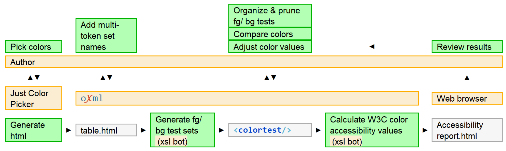

<colortest/>
— Automating accessible color negotiation pipelinesChallenge: Use the W3C-published formula for calculating the accessibility of color combinations. Over many years, the system was re-factored. Copying and pasting values into a small XML model was fine for small projects, but I had to seek client approvals on a pallet of 24 colors that were going to be used for strategic branding.
Figure 18. Color testing and tuning pipeline
|  |
The Just Color Picker tool generated HTML. A new transformation was created to map the HTML output to a new prodoc element, <colortest/>. The production accessibility calculator was updated to handle the new schema and missing functionality was added.
Implementation had a mix of performance objectives: large swatches to make small comparisons, built in black, gray, and white samples, ability to instantly see color changes based on editable hex values, demonstrate single-sourcing concepts to client, save me an armload of effort